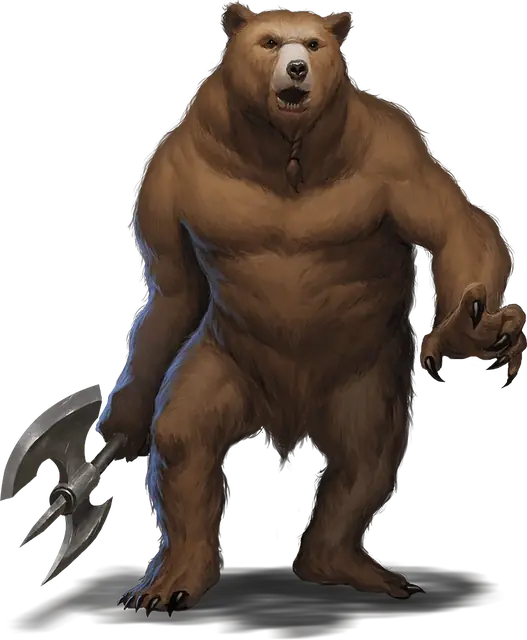

Вермедведь
Werebear
Среднее или Маленькое Чудовище (Ликантроп), Нейтральное Доброе

Класс Защиты 15 Инициатива +3 (13)
Хиты 135 (18к8 + 54)
Скорость 30 футов, Плавания 40 футов (только в форме медведя), Лазания 30 футов (только в форме медведя)
| мод | спас | ||
|---|---|---|---|
| СИЛ | 19 | +4 | +4 |
| ЛОВ | 10 | +0 | +0 |
| ТЕЛ | 17 | +3 | +3 |
| мод | спас | ||
|---|---|---|---|
| ИНТ | 11 | +0 | +0 |
| МДР | 12 | +1 | +1 |
| ХАР | 12 | +1 | +1 |
Чувства Тёмное зрение 60 футов, пассивное Восприятие 17
Языки Общий (не может говорить в форме медведя)
Опасность 5 (1 800 опыта; БВ +3)
Действия
Мультиатака. Вермедведь совершает две атаки Одноручным топором или Раздиранием в любой комбинации. Он может заменить одну из этих атак на атаку Укусом.
Укус (только в форме медведя или в гибридной форме). Бросок рукопашной атаки: +7, досягаемость 5 фт. Попадание: 17 (2к12 + 4) Колющего урона. Если цель — Гуманоид, она подвергается воздействию следующего эффекта. Спасбросок Телосложения: Сл 14. Провал: Цель проклята. Когда Хиты проклятой цели опускаются до 0, она становится Вермедведем под управлением Мастера и получает 10 Хитов. Успех: Цель становится невосприимчива к проклятью этого вермедведя на 24 часа.
Одноручный топор (только в гуманоидной или гибридной форме).. Бросок рукопашной или дальнобойной атаки: +7, досягаемость 5 фт. или дистанция 20/60 фт. Попадание: 14 (3к6 + 4) Рубящего урона.
Раздирание (только в форме медведя или гибридной форме). Бросок рукопашной атаки: +7, досягаемость 5 фт. Попадание: 13 (2к8 + 4) Рубящего урона.
Бонусные действия
Перевоплощение. Вермедведь либо перевоплощается в гибрид медведя и гуманоида Большого размера или медведя Большого размера, либо возвращается в истинную форму гуманоида. Его статистика, кроме размера, не меняется в зависимости от формы. Любое снаряжение, которое он носит или несёт, не трансформируется.
Бонус мастерства +3
Среда обитания Арктика, Леса, Холмы
Сокровища Реликварные
Вермедведь
Преображённый силой медведя
В случае опасности или под воздействием магии вермедведи способны принять облик могучего медведя или гибрида гуманоида и медведя.
Они отпугивают или срывают замыслы тех, кто угрожает дикой природе, и нередко приходят на помощь Феям, друидам и духам природы, которые наделили их магической силой перевоплощения. Вермедведи принимают облик тех видов медведей, которые водятся в местах их обитания — чаще всего бурых или белых.